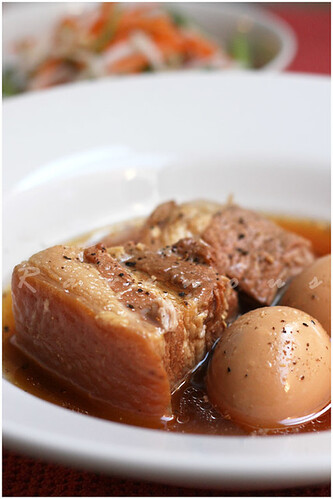

Vietnamese Caramel Braised Pork and Eggs (Thit Kho)

Description
Delicious and classic braised pork and egg dish using caramel sauce and coco rico. Traditionally uses pork belly but I like to use pork spare ribs or pork shoulder for a less fatty version.
This recipe yields 4-6 servings
Ingredients
Meat Marinade
- 2 lbs pork spare ribs, pork belly, or pork shoulder
- 1/3 cup fish sauce
- 2 tbsp sugar
- 3 garlic cloves minced
- 1-2 shallots minced
- 3 tbsp caramel sauce plus more for the braising liquid to taste (I'd recommend another 1/2 cup)
In The Braise
- 2 tbsp grapeseed oil
- 2 garlic cloves minced
- 1 shallot minced
- 2-3 cups water
- 1 cup coco rico
- 8-12 hard boiled and peeled eggs
Steps
- If you haven't already, make the caramel sauce
- Hard boil all your eggs and peel them. I like to bring a pot with water, salt, and a little vinegar to a boil then add the eggs slowly and gently for 10 minutes. Drain and rinse with cold water to cool them down quick before peeling.
- Fill up a pot of with enough water to blanch the pork and some salt.
- Cut pork into 2x2 inch pieces.
- Add the pork into the pot of water, bring to a boil, then drop the temperature and let simmer for 2-3 minutes while skimming the coagulated blood.
- Drain the pork into a colander and rinse with cold water, washing off any excess gunk.
- Transfer the pork into a bowl, add all the marinade ingredients, and mix well. Let marinade for 30 minutes or longer.
- Heat up over medium heat the grapseed oil in a pot that will fit all the pork and eggs.
- Add the garlic and shallots and sweat out a few minutes making sure to not burn them.
- Add the pork and all of the marinade into the pot and let cook while stirring about 3 minutes.
- Add the water and coco rico, bring up to a simmer.
- Add some salt, pepper, and more caramel sauce to taste (remember, flavors will intensify as it braises on).
- Cover the pot and let simmer for an hour.
- Check if the meat is tender, and adjust seasoning if needed.
Jump to home